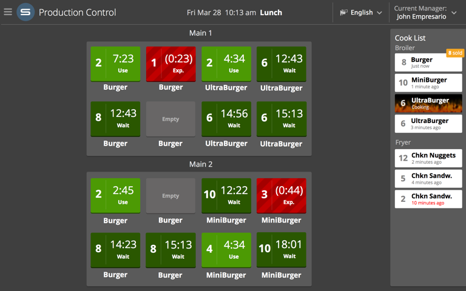
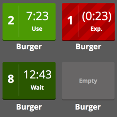
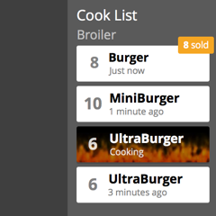

Imagine, for a moment, that you're a fast food chef...
To ensure that customers are served quickly you'll need to keep food on-hand at all times!
However, you can't just leave that cooked food indefinitely -- it'll go bad!
And how many burgers should you cook, anyway?
Production control takes care of all this and more via a touch-friendly tablet-inspired UI.

Burgers don't last forever.
After being cooked, burgers are typically placed in heated holding pans, where their time becomes limited.
Production Control displays each holding unit in a way that closely maps to their physical layout.
For each pan, Production Control provides large, visible indications of the remaining time and quantity, as well as the status of each pan.
Secondary cues based on lightness and pattern accomodate colorblind users.

Cook with confidence.
On the right side of the screen, suggestions for what to cook appear as small cards. Once cooked, these items can be moved to
their appropriate pan. Status is indicated through text, or, in the case of cooking items, an animation of flames.
Want to see it in action?
Like Drive-Thru Monitor, Production Control will soon be deployed by a major restaurant chain at thousands of locations throughout the United States,
so look out for it at a restaurant near you!